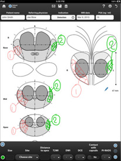
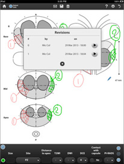
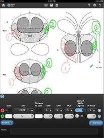
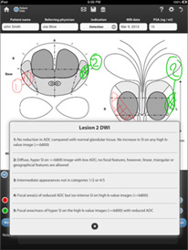

The app that lets you communicate radiological clinical information with a few simple gestures:
- draw the clinically relevant findings on organ and disease specific reporting templates, with different colors for different lesions
- record accompanying clinical parameters, based on PI-RADS score
- organise your forms and retrieve them for follow up and further analysis
- share your forms with colleagues via email: a drawing is worth a thousand words
RADCOMMUNICATOR will contribute to better communication between physicians, and, ultimately, to better patient care.
"As a radiologist, I have often seen that the clinical information derived from imaging is not communicated entirely to the requesting physician, resulting in a limitation of patient care"
(Giuseppe Petralia, IEO - European Institute of Oncology, Milan - Italy)This personal experience has driven the development of RADCOMMUNICATOR with the purpose of facilitating the communication of the clinical results obtained with imaging to the requesting physician. Organ and disease specific reporting templates that provide visual reinforcement of the standard report will be progressively implemented on the basis of clinical experience and made available to the app community. On these templates you will be able to draw the clinically relevant findings and systematically record the clinically significant parameters.
The first reporting template is dedicated to the prostate organ, with reporting based on PI-RADS score
